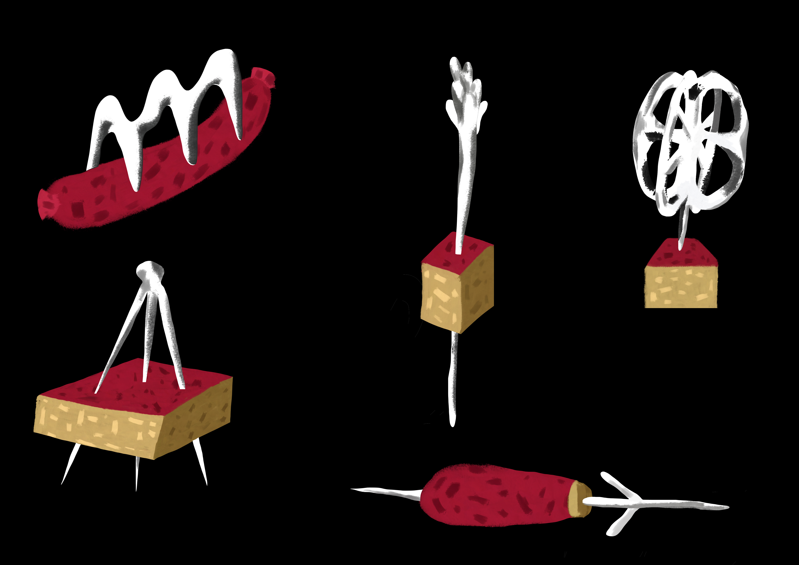
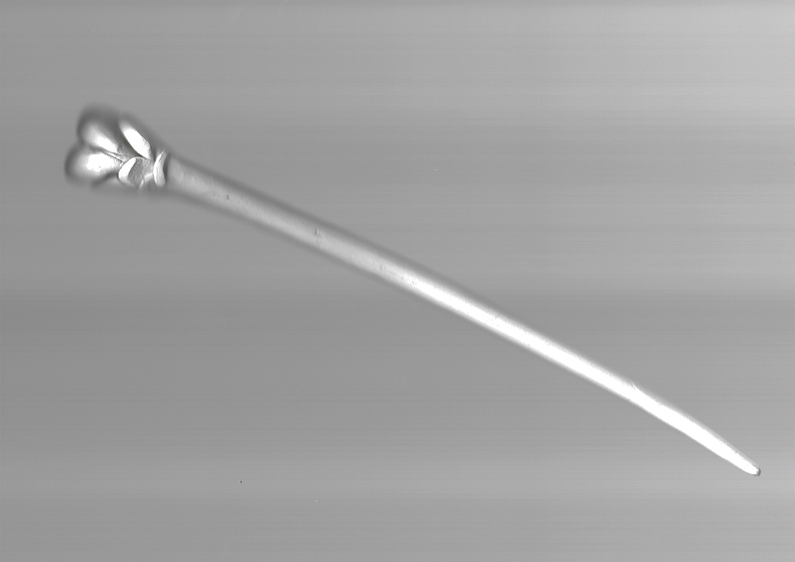
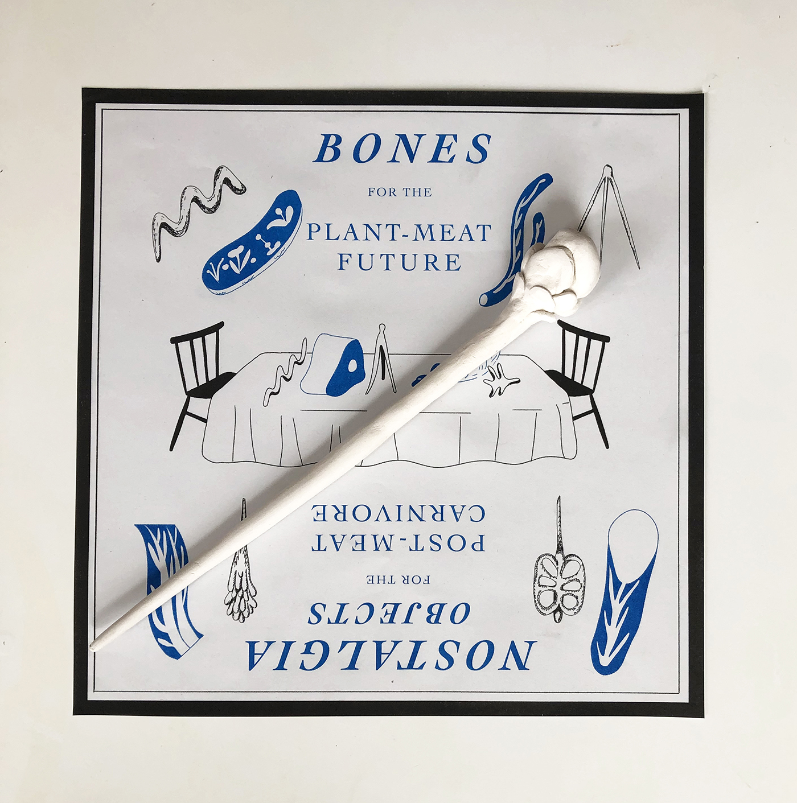
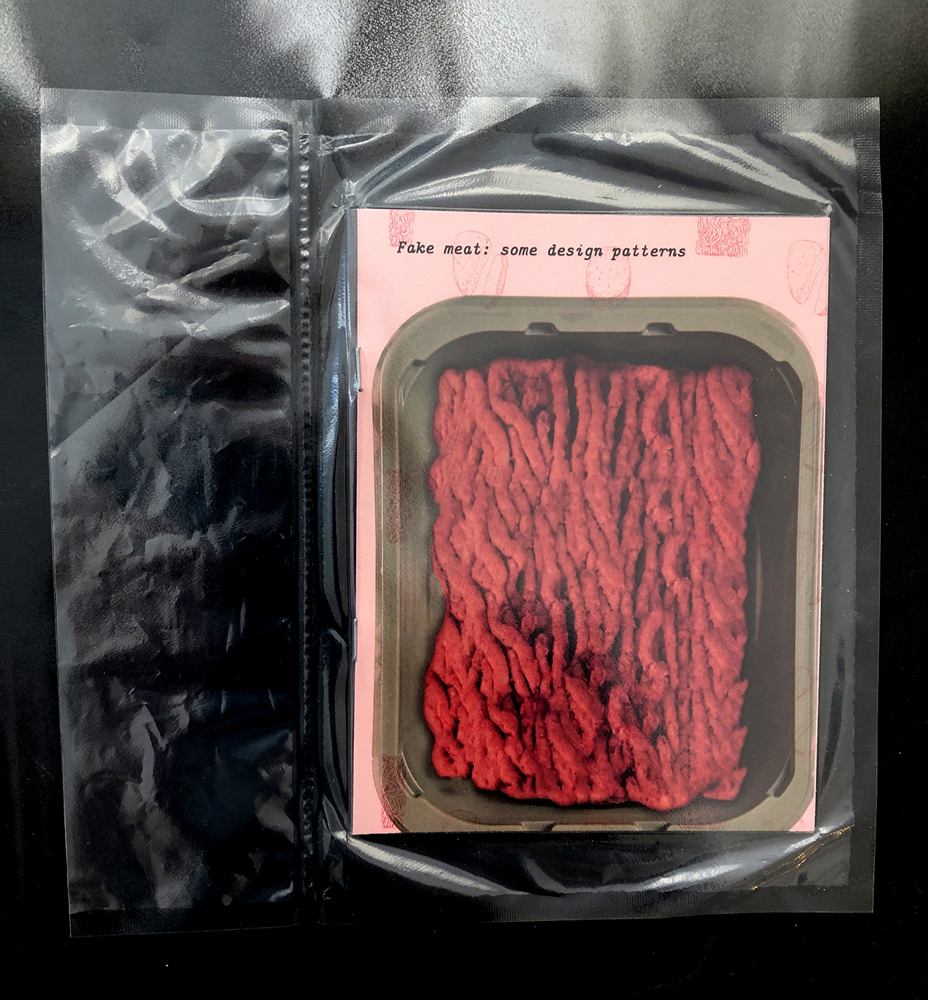

Fake meat makes people uncomfortable, challenges masculinity, and is the future.
A speculative design project which examined the purpose of bones in a post-meat future.



A book containing examples of fake meat, which was shrink-wrapped at a butcher in Clapham. The books were sold at ASP4 at the ICA in December 2018.
